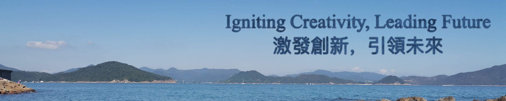

Visionary Innovation Hub

Welcome to Visionary Innovation Hub--a dynamic and innovative center dedicated to fostering high-quality research and development opportunities for entrepreneurs and innovators in Hong Kong and beyond. Established in 2015, our mission is to create a collaborative environment that supports cutting-edge technology and sustainable practices across various sectors.
Our hub spans over 100,000 square feet, strategically located in Kowloon's High- Tech Park, where we collaborate closely with local universities, research institutions, and industry leaders. The Visionary Innovation Hub is home to over 150 companies, including startups and established businesses, employing approximately 1,200 talented professionals focused on diverse fields such as artificial intelligence, biotechnology, and sustainable technology.
We emphasize a student-centered approach by encouraging undergraduate students to engage in research and development activities from their first year. Our innovative environment allows students to join research groups and projects, fostering collaboration and hands-on experience. To enhance their global perspectives, we offer various opportunities for overseas study and internships at prestigious institutions, including Harvard University and MIT.
Our faculty and industry mentors are recognized leaders in their respective fields, providing invaluable guidance and expertise. The hub features three distinct zones: the Technology Zone, Innovation Zone, and Ecology Zone, each designed to support specific areas of research and development. We have created a robust entrepreneurial ecosystem, resulting in the establishment of 370 spin-off companies, with 114 founded in 2024 alone.
Visionary Innovation Hub is committed to providinG world-class facilities, resources, and support to empower our community of innovators. We strive to cultivate an atmosphere that encourages creativity, collaboration, and entrepreneurial spirit, enabling our members to make significant contributions to society. Thank you for considering Visionary Innovation Hub as your platform for innovation and growth.
| Companies | Spin-off Companies | International Partnerships | Research Groups Participation | Overseas Study Opportunities |
|---|---|---|---|---|
| 150+ | 370+ | 50+ | 100% | 10+ |